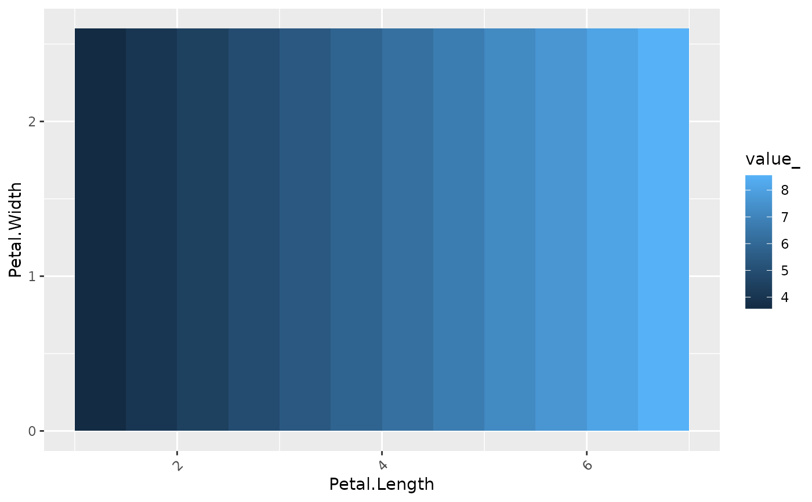

Calculates different types of 2D-profiles across two variables. By default, partial dependence profiles are calculated (see Friedman). Other options are response, predicted values, and residuals. The results are aggregated by (weighted) means.
light_profile2d(x, ...)
# S3 method for default
light_profile2d(x, ...)
# S3 method for flashlight
light_profile2d(
x,
v = NULL,
data = NULL,
by = x$by,
type = c("partial dependence", "predicted", "response", "residual", "shap"),
breaks = NULL,
n_bins = 11L,
cut_type = "equal",
use_linkinv = TRUE,
counts = TRUE,
counts_weighted = FALSE,
pd_evaluate_at = NULL,
pd_grid = NULL,
pd_indices = NULL,
pd_n_max = 1000L,
pd_seed = NULL,
...
)
# S3 method for multiflashlight
light_profile2d(
x,
v = NULL,
data = NULL,
type = c("partial dependence", "predicted", "response", "residual", "shap"),
breaks = NULL,
n_bins = 11L,
cut_type = "equal",
pd_evaluate_at = NULL,
pd_grid = NULL,
...
)An object of class "flashlight" or "multiflashlight".
Further arguments passed to cut3() in forming
the cut breaks of the v variables. Not relevant for partial dependence profiles.
A vector of exactly two variable names to be profiled.
An optional data.frame.
An optional vector of column names used to additionally group the results.
Type of the profile: Either "partial dependence", "predicted", "response", or "residual".
Named list of cut breaks specifying how to bin one or more numeric
variables. Used to overwrite automatic binning via n_bins and cut_type.
Ignored for non-numeric v.
Approximate number of unique values to evaluate for numeric v.
Can be an unnamed vector of length 2 to distinguish between v.
Should numeric v be cut into "equal" or "quantile" bins?
Can be an unnamed vector of length 2 to distinguish between v.
Should retransformation function be applied? Default is TRUE.
Should observation counts be added?
If counts is TRUE: Should counts be weighted by the
case weights? If TRUE, the sum of w is returned by group.
An named list of evaluation points for one or more variables. Only relevant for type = "partial dependence".
An evaluation data.frame with exactly two columns,
e.g., generated by expand.grid(). Only used for type = "partial dependence".
Offers maximal flexibility.
A vector of row numbers to consider in calculating partial dependence profiles. Only used for type = "partial dependence".
Maximum number of ICE profiles to calculate
(will be randomly picked from data). Only used for type = "partial dependence".
Integer random seed used to select ICE profiles. Only used for type = "partial dependence".
An object of class "light_profile2d" with the following elements:
data A tibble containing results. Can be used to build fully customized
visualizations. Column names can be controlled by
options(flashlight.column_name).
by Names of group by variables.
v The two variable names evaluated.
type Same as input type. For information only.
Different binning options are available, see arguments below.
For high resolution partial dependence plots, it might be necessary to specify
breaks, pd_evaluate_at or pd_grid in order to avoid empty parts
in the plot. A high value of n_bins might not have the desired effect as it
internally capped at the number of distinct values of a variable.
For partial dependence and prediction profiles, "model", "predict_function", "linkinv" and "data" are required. For response profiles it is "y", "linkinv" and "data". "data" can also be passed on the fly.
light_profile2d(default): Default method not implemented yet.
light_profile2d(flashlight): 2D profiles for flashlight.
light_profile2d(multiflashlight): 2D profiles for multiflashlight.
Friedman J. H. (2001). Greedy function approximation: A gradient boosting machine. The Annals of Statistics, 29:1189–1232.
fit <- stats::lm(Sepal.Length ~ ., data = iris)
fl <- flashlight(model = fit, label = "iris", data = iris, y = "Sepal.Length")
plot(light_profile2d(fl, v = c("Petal.Length", "Species")))
